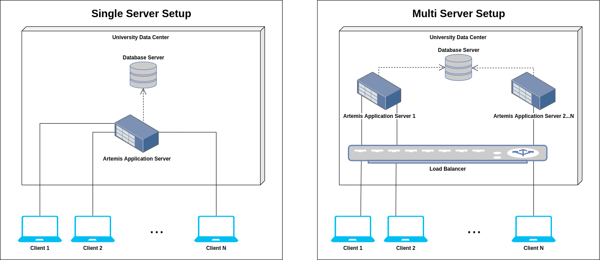

Artemis is a scalable system that supports large courses: Some courses at TUM have been conducted using Artemis with more than 2000 students.
Depending on your setup and the number of users - as well as other requirements such as availability - it might be necessary for you to scale your Artemis installations.
Different aspects of the Artemis infrastructure can be scaled as listed in this document.
The build system is responsible for providing feedback to students when they work on programming exercises.
Especially during lectures and before deadlines, a lot of students work simultaneously on their submissions, causing high load on the build system.
The build system must be scaled adequately in order to provide feedback within a reasonable time.
Artemis supports scaling to provide high availability as well as improved performance.
This is especially important if you plan to conduct exams using Artemis.
A Single Server Setup offers a simple installation and can be used for testing purposes and a small (100) to medium (500) number of concurrent users.
A Multi Server Setup uses a load balancer to distribute requests between the different instances of the Artemis Application Server.
Environments can easily be scaled to support more than 1000 concurrent users.
All instances share the same database (and filesystem) and can be added/removed from the environment during runtime.
Details regarding the scaling of Artemis can be found in the corresponding section of the documentation.

Depending on your setup and the number of users, you might also be required to scale/optimize other parts of the Artemis infrastructure, e.g. the database or used third-party systems.
Please refer to the corresponding documentations for detailed information.
Note that support for Kubernetes is currently being added.